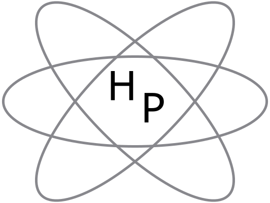

Welcome to
HyperPhysics

Rational for Development
HyperPhysics is an exploration environment for concepts in physics which employs concept maps and other linking strategies to facilitate smooth navigation. For the most part, it is laid out in small segments or "cards", true to its original development in HyperCard. The entire environment is interconnected with thousands of links, reminiscent of a neural network. The bottom bar of each card contains links to major concept maps for divisions of physics, plus a "go back" feature to allow you to retrace the path of an exploration. The side bar contains a link to the extensive Index, which itself is composed of active links. That sidebar also contains links to relevant concept maps. The rationale for such concept maps is to provide a visual survey of conceptually connected material, and it is hoped that they will provide some answers to the question "where do I go from here?". Whether you need further explanation of concepts which underly the current card content, or are seeking applications which go beyond it, the concept map may help you find the desired information.
Part of the intent for this exploration environment is to provide many opportunities for numerical exploration in the form of active formuli and standard problems implemented in Javascript. An active exploration in physics will typically lead you to something which needs to be quantified, and it is hoped that the many Javascript-enabled calculations will provide many opportunities to answer "What if .." type questions.
New content for HyperPhysics will be posted as it is developed. The intent is to maintain the entire HyperPhysics project on the Web with stable locations so that links to it may be established with confidence that they will be there for an extended period of time. As the basic phase nears completion, the author is interested in extensions to specific applied areas. If you are interested in developing specific material for a specialized course, you might consider building it upon this framework with links to HyperPhysics to provide the basic conceptual background. The entire HyperPhysics project can be made available on a cross-platform DVD or USB memory since it will remain compatible with the standard web browsers.